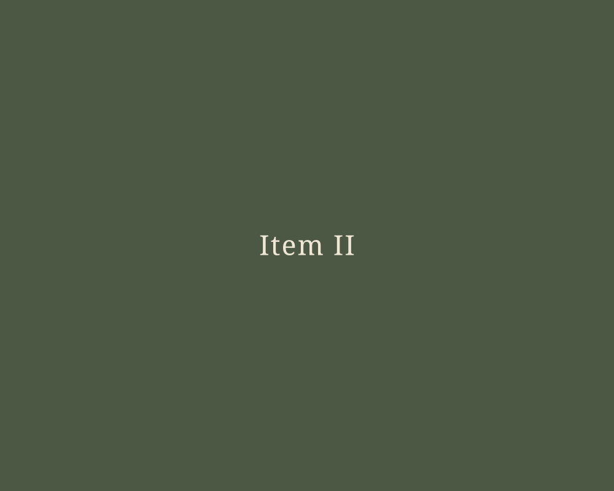
Item release
ITEM II – IN CIRCULATION

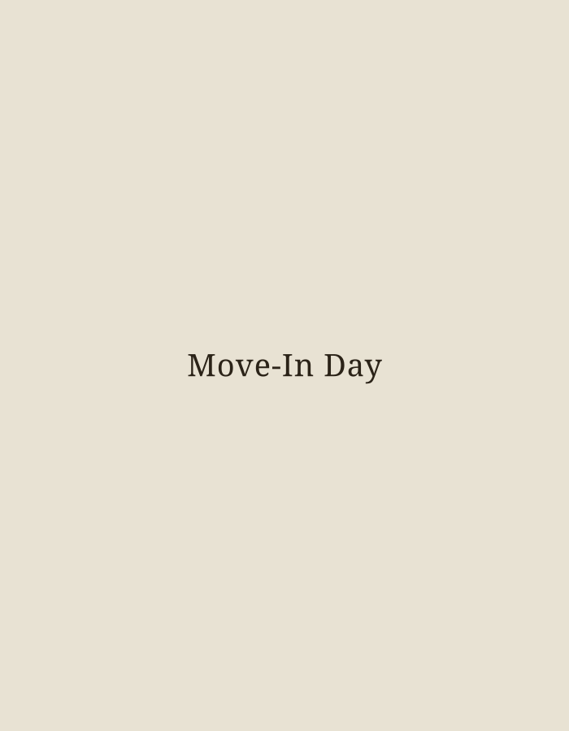
Commitment
Precedes
Entry /
Not
Everything
is Visible
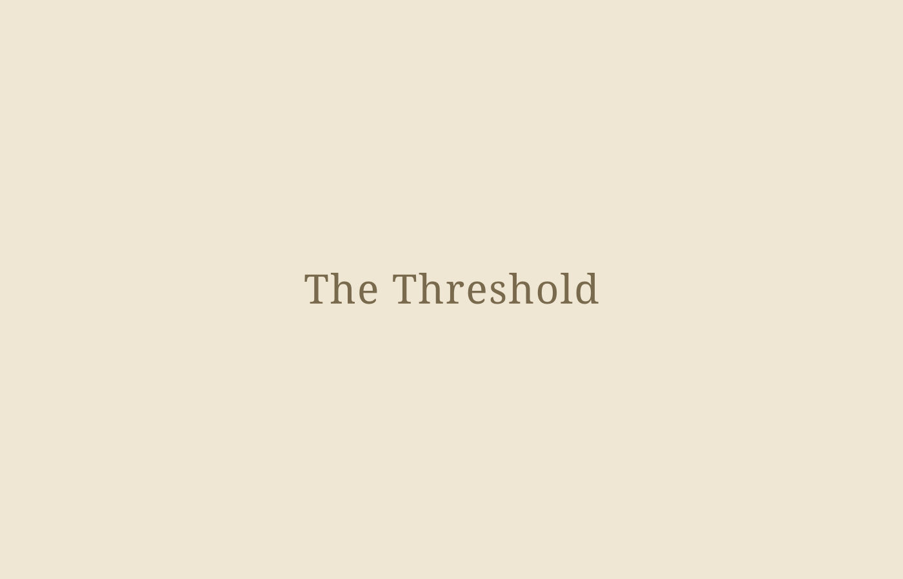
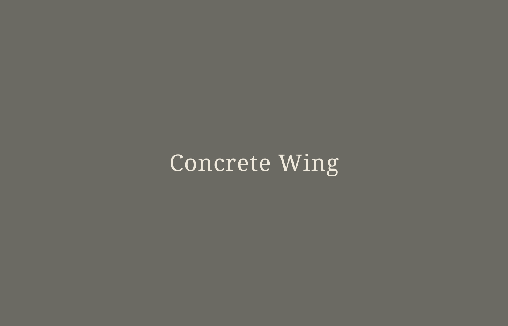
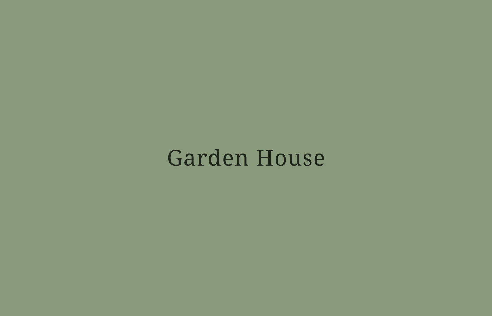
THESE PLACES AREN'T BROADLY ANNOUNCED.
There are 7 in operation at the moment, each established within a specific context and maintained with discretion. Their presence is intentional, shaped by location rather than visibility. Access is considered, not assumed.
See if
Nearby /
EACH ORIGINATES ON SITE,
SHAPED BY MATERIAL, PROCESS,
AND CIRCUMSTANCE.
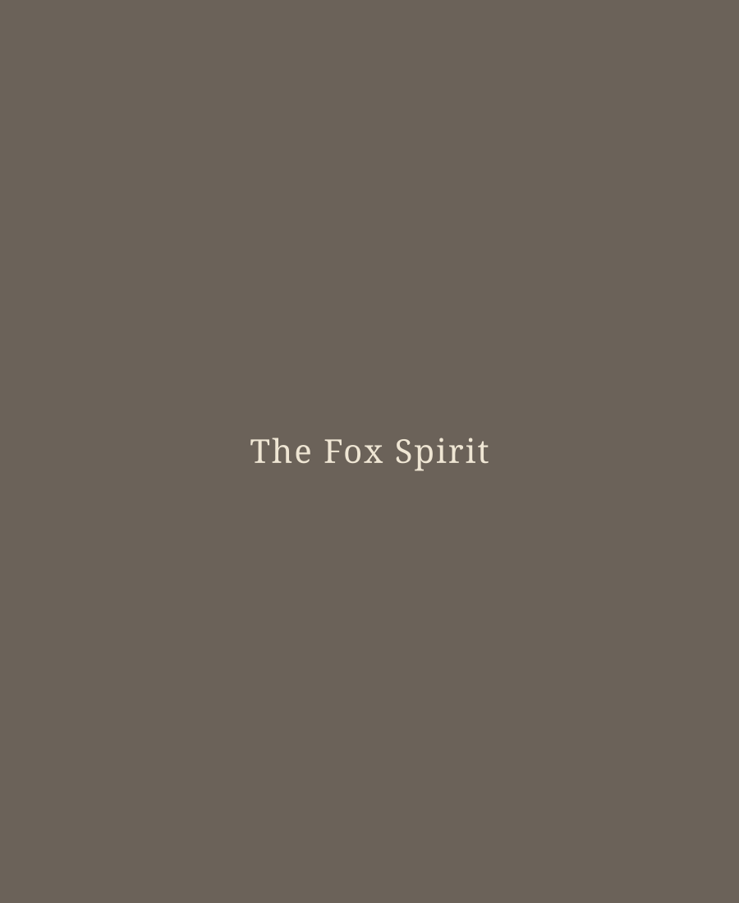
Once completed, they leave their point of origin and circulate independently.
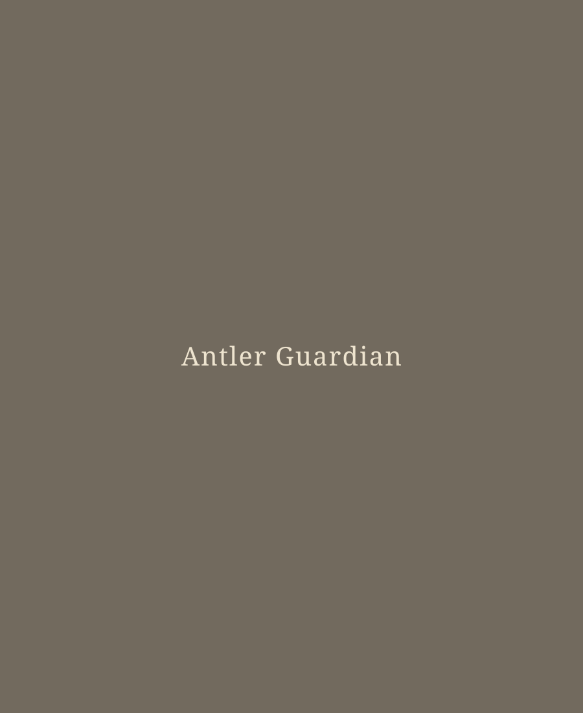
Formed on site, each piece carries the marks of its origin forward.
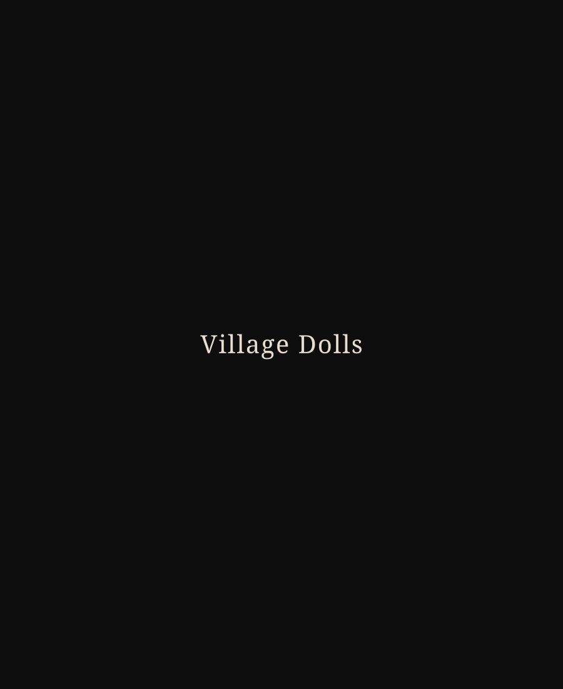
A set, never sold apart, kept together by design.
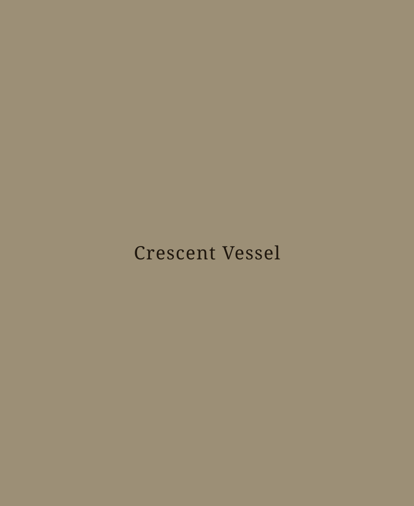
Shaped by hand, tied to a single place and season.
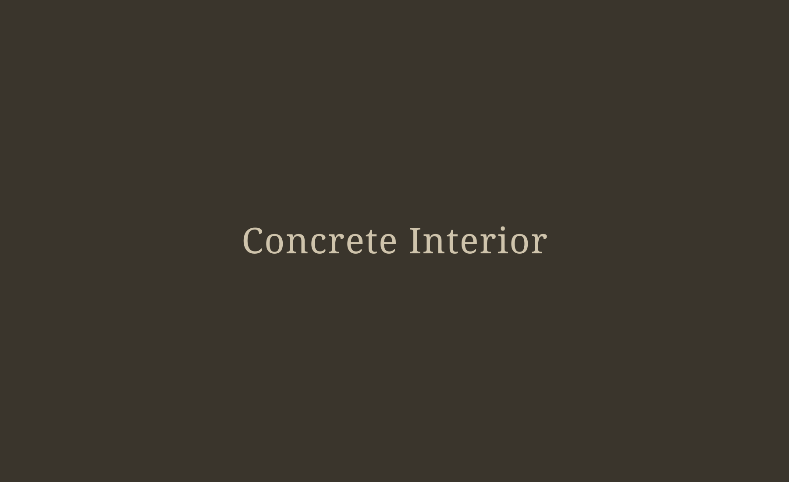
Places and Items are not separate. Each item originates within a specific place, shaped by its conditions, materials, and use.
Once removed, the item continues independently, carrying its point of origin without representing it directly.
Now Forming

Item release
ITEM II – IN CIRCULATION
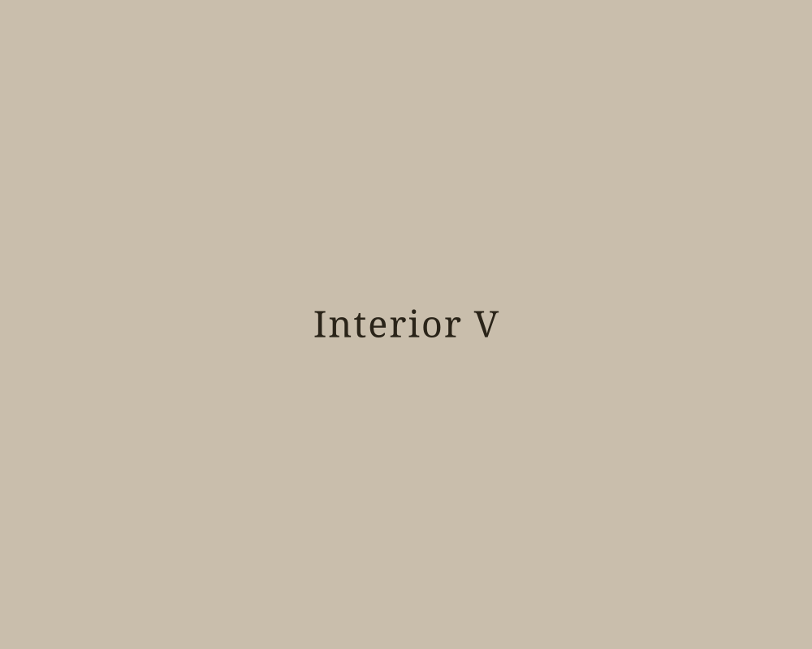
Formation / Process
INTERIOR V – FORMING
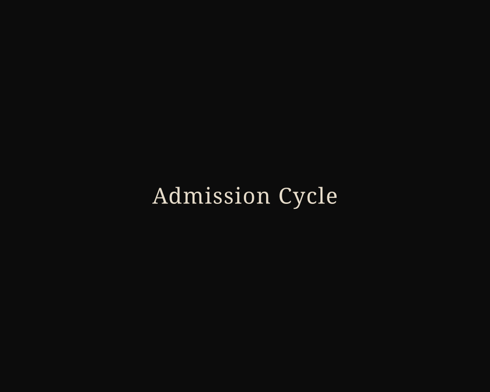
Admission-related
ADMISSION CYCLE – OPEN